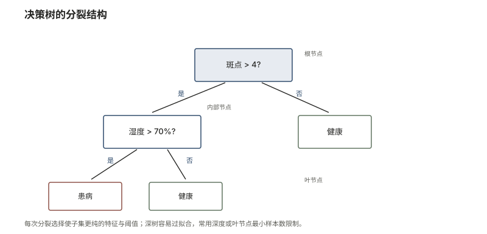

SCI101 · 第 7 章
经典机器学习方法
Introduction to Machine Learning Methods
虚线下划线为术语；悬停查看中文、英文与释义，完整词典见“术语”。
本章目录
本讲覆盖四类经典方法：决策树、随机森林、支持向量机与梯度提升。主线是同一个问题的四种回答方式——如何划分空间、如何组合多个模型、如何定义“最好的边界”、如何逐步修正错误。
本章要点
- 计算建模是理论优先、规则驱动、追求理解系统；AI 驱动分析是数据优先、学习驱动、追求发现模式；两者结合是物理信息机器学习。
- 决策树是流程图式的 if-else 提问，每次分裂追求纯度（如 Gini 不纯度），叶节点给出结果。
- 决策树是贪心算法：每个节点只选当前最优分裂，不考虑后续，可能得到次优整体结构。
- 随机森林用 bagging 训练多棵树，分类投票、回归平均，降低过拟合。
- SVM 找最大间隔超平面，靠支持向量定义边界；核技巧把数据映射到高维使线性可分。
- 梯度提升序列建树，每棵新树拟合前面模型的错误；随机森林则并行、独立。
7.1 计算建模 vs AI 驱动分析
讲义开篇用一张对照表区分两种研究范式，这是理解“为什么需要机器学习”的入口：
| 维度 | 计算建模 | AI 驱动分析 |
|---|---|---|
| 目标 | 理解一个系统 | 在数据中找模式 |
| 路径 | 理论优先、基于规则 | 数据优先、基于学习 |
| 产出 | 仿真、预测 | 预测、分类 |
两者并非互斥：讲义指出“计算 + AI”就是物理信息机器学习physics-informed machine learning，即把计算建模的物理约束与 AI 的数据驱动分析结合起来。
L5 slide 10
7.2 决策树：结构与直觉
决策树decision tree是用于分类与回归的机器学习方法，形态像流程图：每个问题把数据切开，每条分支代表一个决策，每个叶节点代表一个结果。讲义把它比作“20 个问题”游戏——通过一连串是/否提问逐步缩小范围。
树的生长逻辑是“分裂后更纯”：每次选择某个特征与阈值，把当前数据分成两份，使子集的类别更一致。讲义在对比页把这一机制写作“基于特征值把数据切成子集，以最大化纯度（例如 Gini 不纯度）”。停止条件通常是树的深度、叶节点最小样本数等超参数。


绘图提示词
Clean vector decision tree flowchart with a root question at the top splitting into two branches, each branch leading to another yes-no question, and four leaf boxes at the bottom labelled with class outcomes; branch edges labelled yes and no. Flat 2D, thin 1.5 px strokes, muted slate blue and warm grey palette, white background, English labels, no cartoon, no gradient, no shadow.
讲义强调决策树的优点是“可解释”：学到的规则可以打印出来（export_text），人可以直接读懂，这对实验室与现场应用很重要。
L5 slide 20–22
7.3 三个决策树实例
讲义用三个由浅入深的例子展示同一套流程：收集小数据集 → 划分训练/测试（如 80/20）→ 训练并限制深度 → 评估 → 读规则解释。
实例一：水果分类。目标是从质量（g）、直径（cm）、颜色分（0–1）预测苹果/橙子/香蕉。之所以选树，是因为规则容易解释。代码用 max_depth = 3 避免过拟合，训练后在测试集上算准确率，再用 export_text 打印学到的规则，例如 color_score > 0.7 很可能是苹果。
实例二：水质安全（二分类）。目标是把水样判为安全/不安全，特征是 pH、浊度（NTU）、硝酸盐（mg/L）。判定规则来自标准区间：pH 应在 6.5–8.5，浊度小于 5，硝酸盐小于 10；三条都满足则安全，任一条违反即不安全。训练时限制深度与叶节点最小样本数，评估用准确率与混淆矩阵，最后读规则向实验室解释判定依据。
实例三：植物叶片诊断。目标是把叶片分为健康/患病，特征是斑点数量、湿度（%）、温度（°C）。讲义给的简单规则是：斑点 > 4 且湿度 > 70% 判为患病，否则健康。评估用 F1 分数，因为两类样本可能不平衡；规则可直接指导田间检查。
L5 slide 24–35
7.4 随机森林：多棵树的投票
随机森林random forest是一种集成方法ensemble method，把许多棵决策树组合起来。每棵树在数据的随机样本上训练，最终预测由多数投票（分类）或平均（回归）产生。讲义用“问 100 个朋友这个水果是苹果还是橙子，取多数答案”作类比。
关键在于“随机”带来的多样性：单棵树容易对训练数据的小变化敏感（不稳定），多棵树平均后，个别树的偏差与噪声被抵消，因此比单棵树更准、更不易过拟合。讲义在优点里明确写“通过平均降低过拟合”“提供特征重要性”。
实例是动物三分类：特征为体温（°C）、是否产卵（0/1）、是否生活在咸水（0/1），目标为鱼/鸟/哺乳动物。鱼类体温约 12°C、产卵、咸水；哺乳类约 39°C、不产卵、非咸水；鸟类居中约 30°C、产卵、非咸水。训练用 RandomForestClassifier，n_estimators ≈ 200；数据含 240 个合成动物（各 80 个）。评估准确率并查看特征重要性，例如“哺乳动物约 37°C 且不产卵”就是模型学到的一条可解释规律。
L5 slide 36–45
7.5 SVM：最大间隔
支持向量机support vector machine是监督学习算法，用于分类（也可用于回归）。它寻找能把类别分开的最佳边界，这个边界在二维是直线、在高维是超平面hyperplane。与“任意一条能分开的线”不同，SVM 要求间隔margin最大——即边界到最近数据点的距离尽可能宽。
讲义用“在沙地上画一条线分开猫和狗，希望两边留出最宽的空隙”作类比；把 SVM 比作“聪明的尺子”，不是随便画线，而是找那条让红绿点离得最远的线。决定这条线的不是所有点，而是离边界最近的几个点，它们叫支持向量support vectors。

Clean vector 2D scatter plot with two classes of dots, a solid decision boundary line between them, two dashed parallel margin lines, the gap between margins shaded, and the nearest points circled and labelled support vectors. Flat 2D, thin 1.5 px strokes, muted slate blue and warm grey palette, white background, English labels, no cartoon, no gradient, no shadow.
实例一（线性核）把化合物分为有毒/无毒，特征为 logP（疏水性）与分子量，因为两类大致线性可分。流程是先缩放特征、划分数据，再训练 SVC(kernel='linear')，取得边界系数并查看支持向量，最后评估准确率。讲义特别提醒“先缩放”：SVM 依赖距离，量纲不同会扭曲间隔。
L5 slide 46–57、72
7.6 核技巧：把数据送到更高维
当数据不是线性可分时（例如红点被绿点围成一圈），直线无能为力。讲义把核kernel比作“魔法眼镜”：让 SVM 以一种新的方式看这些点，从而能用直线分开。严格的表述是：核把输入映射到更高维空间，在那里线性分离成为可能。
讲义给了两个非线性实例。其一是 RBF 核：目标是按两个显微特征（texture_score、reflectance）对矿物颗粒分类，类别呈环形分布，因此用 SVC(kernel='rbf')，并用 GridSearchCV 调 C 与 gamma（候选 C 为 0.5、1、2，gamma 为 scale、0.5、1）。其二是多项式核：由 peak_ratio 与 hardness 预测晶体结构 A/B，用 degree = 2 或 3 捕捉弯曲边界，并与线性核基线比较。
核的选择直接决定模型能力，也带来代价：讲义在缺点里写“性能高度依赖核与参数调优”“较难直观解释”“数据量大时计算昂贵、内存占用高”。
L5 slide 54–55、105–112
7.7 梯度提升：从错误中学习
梯度提升gradient boosting序列地建树，每一步改进上一次的错误。讲义用备考类比：普通学生只背简单事实（弱模型），聪明的学生会集中攻克上次做错的题——梯度提升就是这样，每棵新树拟合前面模型的残差。
流程是：先建一棵很简单的树（如树桩），测量它的误差；再建下一棵树去预测这些误差；重复并把所有树组合成一个强模型。讲义提到 XGBoost 是流行实现，并称这类方法在竞赛中极强。
回归实例是植物高度预测：特征为日照时数、水量、肥料量，用 GradientBoostingRegressor 训练，评估指标是平均绝对误差：
选择梯度提升的理由是“对带交互项的表格回归很强”：日照与肥料存在交互（肥料充足时日照的边际效果更大），树模型能自动捕捉这种非线性与交互，不必人工构造乘积项。
L5 slide 58–64
7.8 四种方法的对比
讲义用两页大表做横向比较，这里压缩成一张可背诵的表：
| 方法 | 一句话定义 | 优势 | 短板 |
|---|---|---|---|
| 决策树 | 按特征做层级 if-else 提问的树状模型 | 简单、直观、易可视化；无需特征缩放 | 深树易过拟合；数据小变动会改变树结构 |
| 随机森林 | bagging 组合多棵树，投票或平均 | 比单树稳、准确率高、可给特征重要性 | 黑箱、难解释；大数据下内存密集 |
| SVM | 找最大间隔超平面分隔类别 | 高维有效；核技巧处理非线性；内存高效 | 性能依赖核与参数；解释性较弱 |
| 梯度提升 | 序列建树，每棵纠正前序错误 | 预测精度常达顶级；稳健处理复杂模式 | 易过拟合需调参；串行训练慢、计算贵 |
讲义还给了一张“最适合场景”的对应：决策树适合小数据集与可解释性至上的任务（如业务规则）；随机森林是通用首选（first try）；SVM 适合精度比解释更重要、且间隔清晰的中等规模数据（文本分类、图像识别）；梯度提升适合竞赛与“榨干最后一点精度”的场合。四个类比也值得记：流程图、专家委员会投票、在两个社区之间修最宽的马路、专攻错题的备考学生。
生物学的对应例子是：决策树做植物病害诊断，随机森林做物种分类，SVM 做细胞健康分类，梯度提升做药物反应预测。
L5 slide 65–67
7.9 易错点与题型精讲
讲义末尾的十道选择题，实际在反复考五个概念，逐个拆开即可：
- 结构：决策树是“问题与答案的流程图，把数据切开”，不是“多个模型投票”，也不是“线性方程”。
- 训练/测试划分的目的：让模型在一部分数据上训练，在未见数据上评估性能；不是用测试集训练。
- 贪心：决策树在当前节点选最优分裂，不考虑后续分裂，因此整体树可能次优；它不保证全局最优，也不要求目标变量正态。
- 随机森林的优势：通过平均多棵树降低过拟合；不是“总是更快”，也不是“更易可视化”。
- SVM 与核：SVM 通过最大化间隔（边界到最近点的距离）找边界；核的作用是把输入映射到更高维空间使线性可分。
梯度提升与随机森林的差别是最高频的一题：梯度提升串行，每棵树学习前面模型的错误；随机森林并行，各树独立。由此还可推出梯度提升“强大”的原因——它把计算集中在最难预测的训练样本上，而不是靠独立模型的“群体智慧”。
L5 slide 69–72